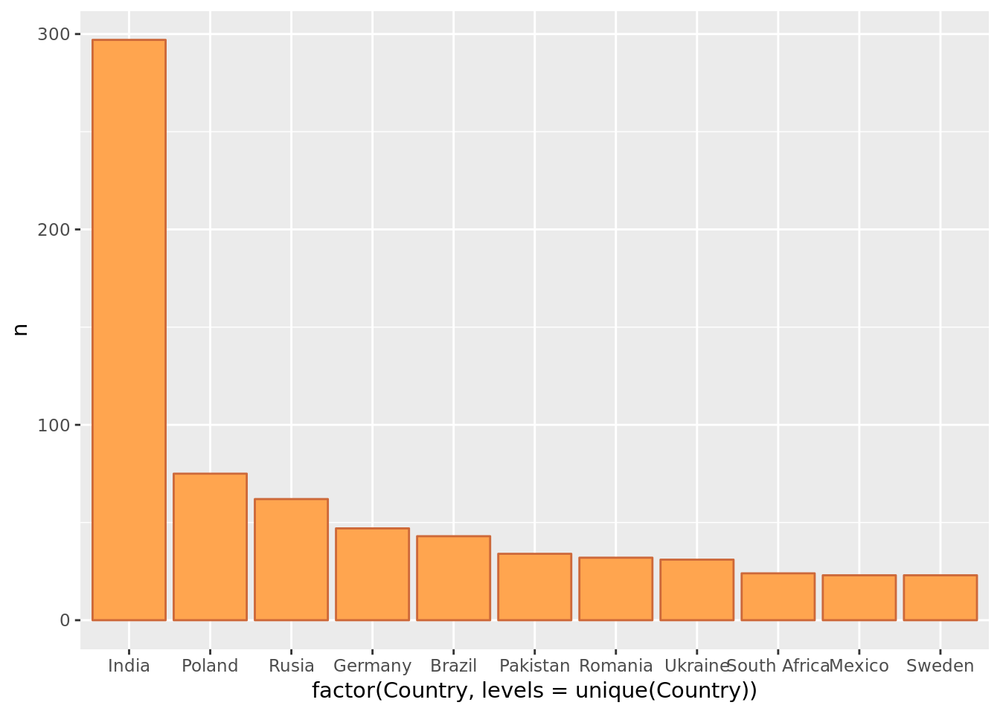
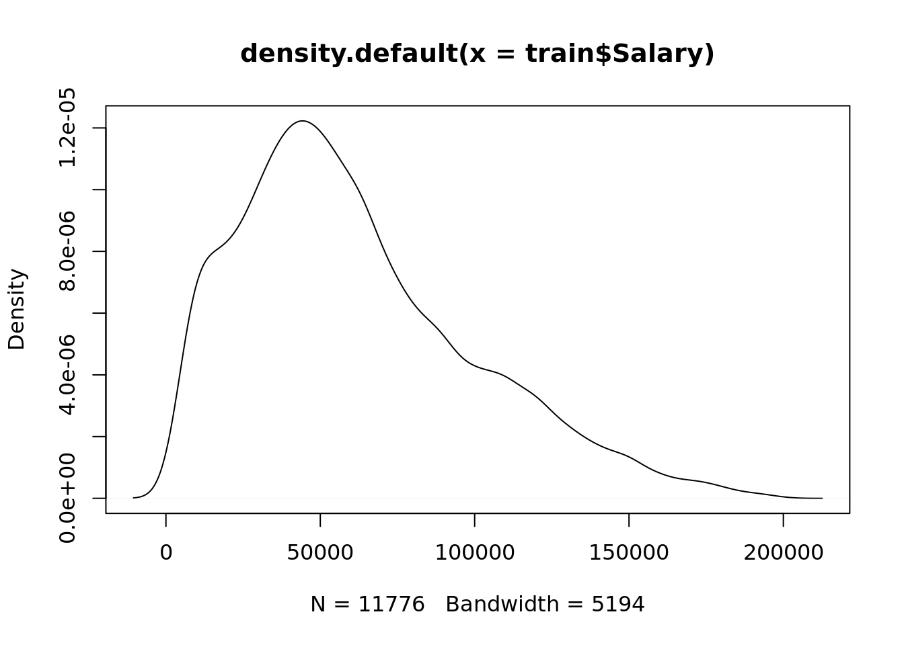
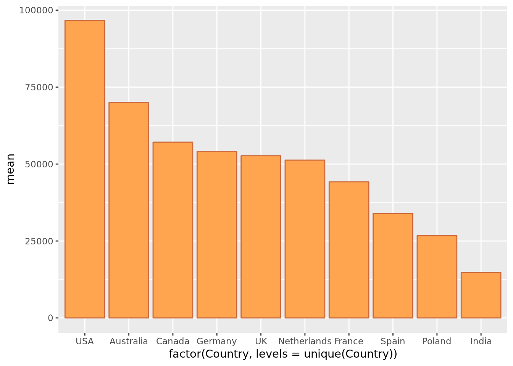
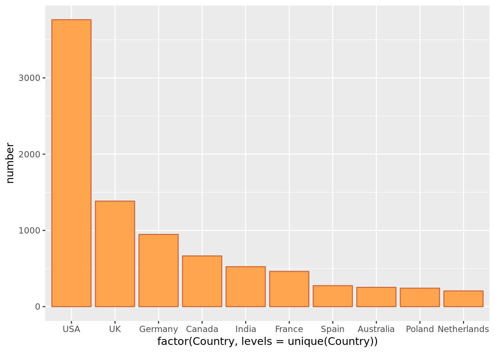
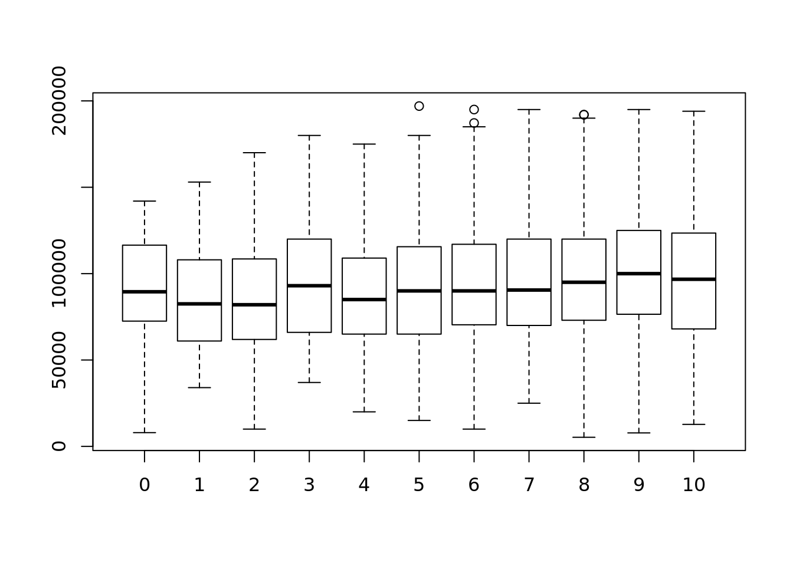
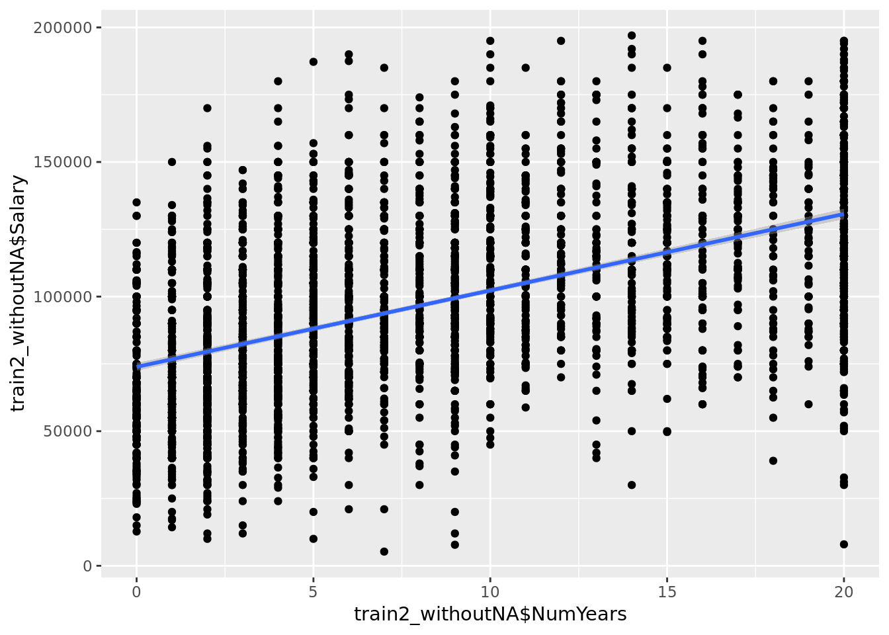

StackOverflowData
25-09-2018
1 Introduction
We are analyzing StackOverflow data. This is a data frame with 51392 observations and 154 variables coming from surveys from Stackoverflow users.
## # A tibble: 6 x 154
## Respondent Professional ProgramHobby Country University EmploymentStatus
## <int> <chr> <chr> <chr> <chr> <chr>
## 1 1 Student Yes, both United… No Not employed, a…
## 2 2 Student Yes, both United… Yes, full… Employed part-t…
## 3 3 Professiona… Yes, both United… No Employed full-t…
## 4 4 Professiona… Yes, both United… No Employed full-t…
## 5 5 Professiona… Yes, I prog… Switze… No Employed full-t…
## 6 6 Student Yes, both New Ze… Yes, full… Not employed, a…
## # ... with 148 more variables: FormalEducation <chr>,
## # MajorUndergrad <chr>, HomeRemote <chr>, CompanySize <chr>,
## # CompanyType <chr>, YearsProgram <chr>, YearsCodedJob <chr>,
## # YearsCodedJobPast <chr>, DeveloperType <chr>, WebDeveloperType <chr>,
## # MobileDeveloperType <chr>, NonDeveloperType <chr>,
## # CareerSatisfaction <int>, JobSatisfaction <int>, ExCoderReturn <chr>,
## # ExCoderNotForMe <chr>, ExCoderBalance <chr>, ExCoder10Years <chr>,
## # ExCoderBelonged <chr>, ExCoderSkills <chr>, ExCoderWillNotCode <chr>,
## # ExCoderActive <chr>, PronounceGIF <chr>, ProblemSolving <chr>,
## # BuildingThings <chr>, LearningNewTech <chr>, BoringDetails <chr>,
## # JobSecurity <chr>, DiversityImportant <chr>, AnnoyingUI <chr>,
## # FriendsDevelopers <chr>, RightWrongWay <chr>,
## # UnderstandComputers <chr>, SeriousWork <chr>, InvestTimeTools <chr>,
## # WorkPayCare <chr>, KinshipDevelopers <chr>, ChallengeMyself <chr>,
## # CompetePeers <chr>, ChangeWorld <chr>, JobSeekingStatus <chr>,
## # HoursPerWeek <int>, LastNewJob <chr>, AssessJobIndustry <chr>,
## # AssessJobRole <chr>, AssessJobExp <chr>, AssessJobDept <chr>,
## # AssessJobTech <chr>, AssessJobProjects <chr>,
## # AssessJobCompensation <chr>, AssessJobOffice <chr>,
## # AssessJobCommute <chr>, AssessJobRemote <chr>, AssessJobLeaders <chr>,
## # AssessJobProfDevel <chr>, AssessJobDiversity <chr>,
## # AssessJobProduct <chr>, AssessJobFinances <chr>,
## # ImportantBenefits <chr>, ClickyKeys <chr>, JobProfile <chr>,
## # ResumePrompted <chr>, LearnedHiring <chr>,
## # ImportantHiringAlgorithms <chr>, ImportantHiringTechExp <chr>,
## # ImportantHiringCommunication <chr>, ImportantHiringOpenSource <chr>,
## # ImportantHiringPMExp <chr>, ImportantHiringCompanies <chr>,
## # ImportantHiringTitles <chr>, ImportantHiringEducation <chr>,
## # ImportantHiringRep <chr>, ImportantHiringGettingThingsDone <chr>,
## # Currency <chr>, Overpaid <chr>, TabsSpaces <chr>,
## # EducationImportant <chr>, EducationTypes <chr>, SelfTaughtTypes <chr>,
## # TimeAfterBootcamp <chr>, CousinEducation <chr>, WorkStart <chr>,
## # HaveWorkedLanguage <chr>, WantWorkLanguage <chr>,
## # HaveWorkedFramework <chr>, WantWorkFramework <chr>,
## # HaveWorkedDatabase <chr>, WantWorkDatabase <chr>,
## # HaveWorkedPlatform <chr>, WantWorkPlatform <chr>, IDE <chr>,
## # AuditoryEnvironment <chr>, Methodology <chr>, VersionControl <chr>,
## # CheckInCode <chr>, ShipIt <chr>, OtherPeoplesCode <chr>,
## # ProjectManagement <chr>, EnjoyDebugging <chr>, InTheZone <chr>, …Would it be possible to predict a programmer’s salary based on the answers to some questions of this survey?.
We are going to take a look at the distribution of the Salaries, taken all the samples where Salary was reported:
Second peak around 50000 dollards looks promising but there is another small peak at very low salaries. Is it like that? Let’s see at the ones answering their salary is bellow 5000 dollards per year that is extremmely low salary. It could be very under-developed countries or people that by mistake was taking it as monthly salary?

There is a huge difference between number of people earning less than 5000 dollards/year in India and the rest of countries. We cannot just say there is so big number of mistakes in people answering from India, so we can think salaries in India are miserable….Do not go to India to work in programming unless you like the country and it was for fun.
We consider we can remove this first peak without affecting the data

We have seen there could be very different answers on Salary based on Country. Let’s look the mean salary and the number os respondents per country but looking at the ones with bigger mean salary and number of respondents to see if these are the same:

Some insights. If you want some decent increase in your salary, do not move to France they are very proud of themselves, speak very strange and you will not get that much. USA seems the place to go if you do not mind to have a kind of carrot as president.
But all right, we have decided based on this data, use the USA samples to build a model that can predict your salary if you move to USA.
We have chosen some data that we think it can have an influence on the salary:
- FormalEducation
- MajorUndergrad
- CompanySize
- CompanyType
- YearsProgram
- YearsCodedJob
- DeveloperType
- JobSatisfaction
- JobSecurity
- JobSeekingStatus
- JobProfile"
- HaveWorkedLanguage
- HaveWorkedPlatform
- VersionControl
- Gender
- ExpectedSalary
and of course
- Salary
1.1 There is no correlation between JobSatisfaction and Salary

It gives the impression that they don’t correlate.
To complement the analysis, we obtain a correlation.
First we need to clean the data, eliminating rows with NA
## [1] 0.09798821Which means low correlation.
It seems that this variable could be eliminated from the analysis.
1.2 There is no correlation between Gender and Salary
## [1] 0.054256331.3 There is correlation between Salary and YearsCodedJob
## [1] 0.5381711
## 2.5 % 97.5 %
## (Intercept) -2.370266e+00 -1.3209414261
## train2_withoutNA$Salary 9.683248e-05 0.0001070672This variable has a clear influence in the Salary so it should be kepct in the model.
Next steps would be to continue looking more variables that can be part of the model. Then split the 4000 observations from USA with Salary into two data frames.
Train-> To build the model Test -> For testing the model and see if the model works
Then use your own data to see your salary on USA.